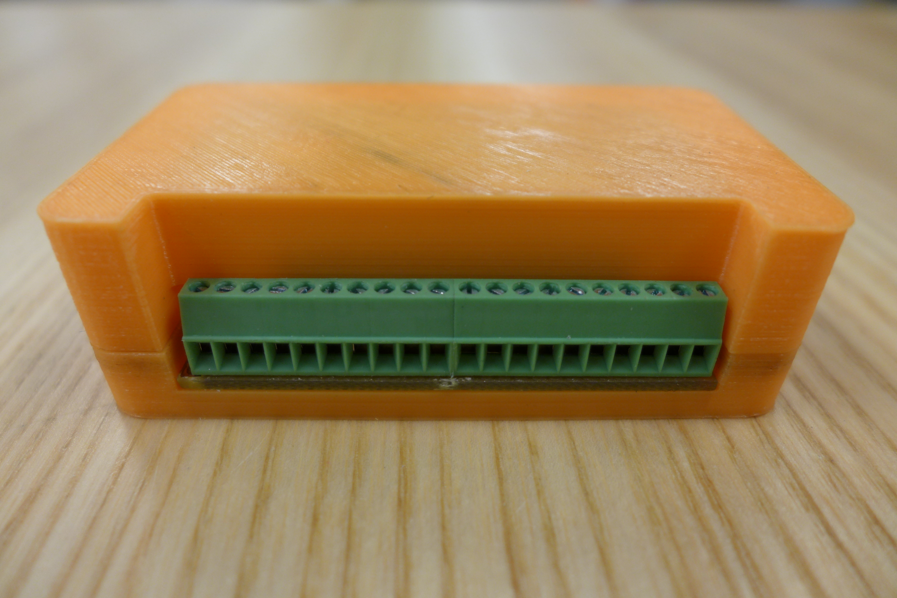
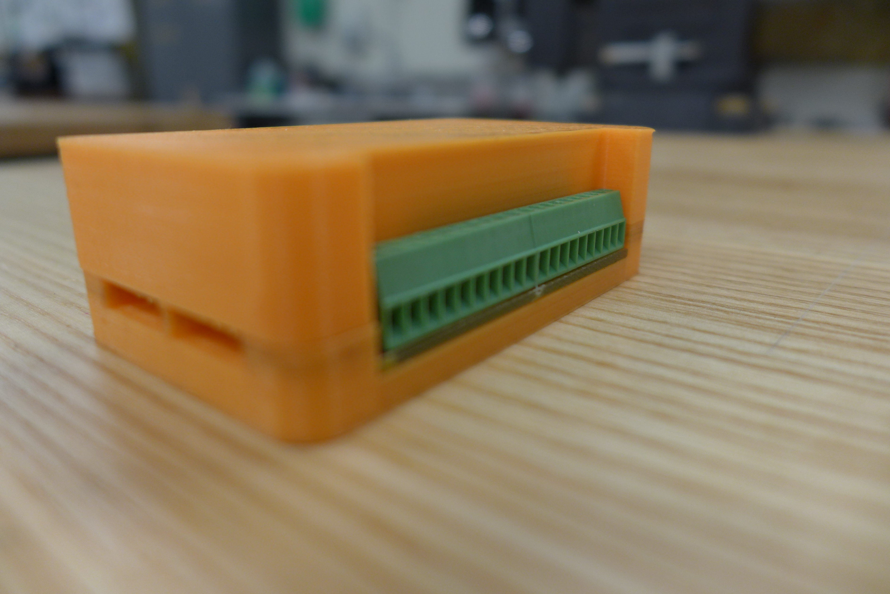
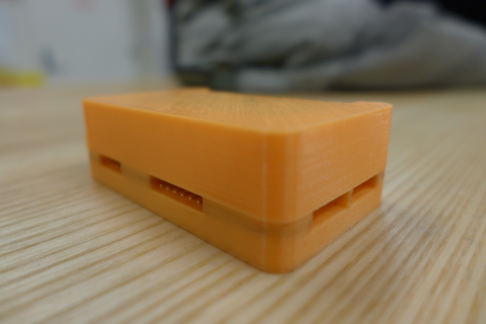
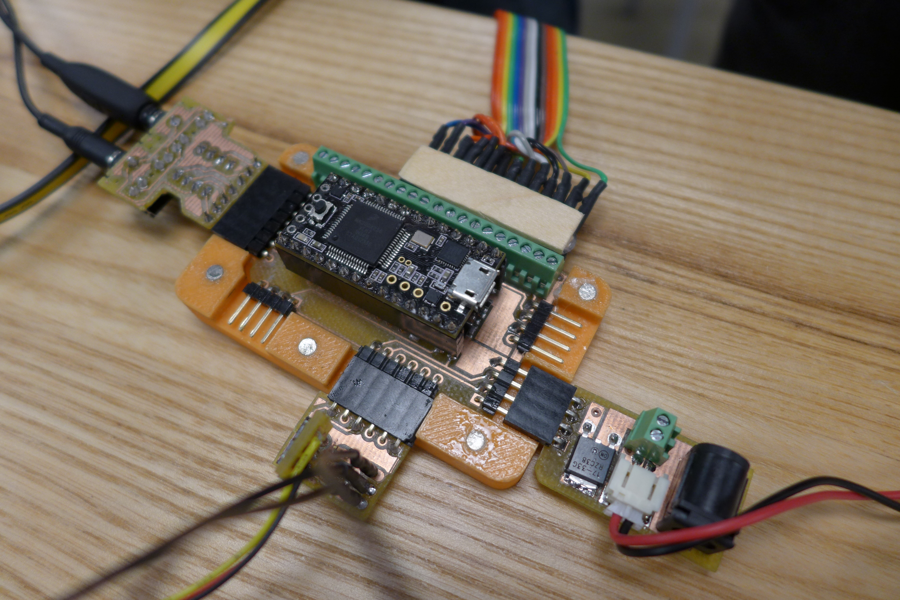
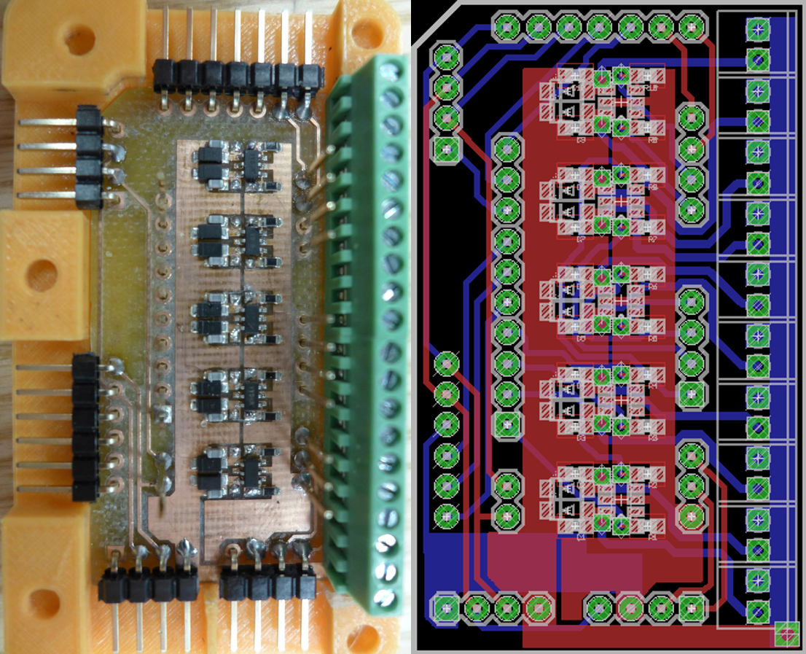
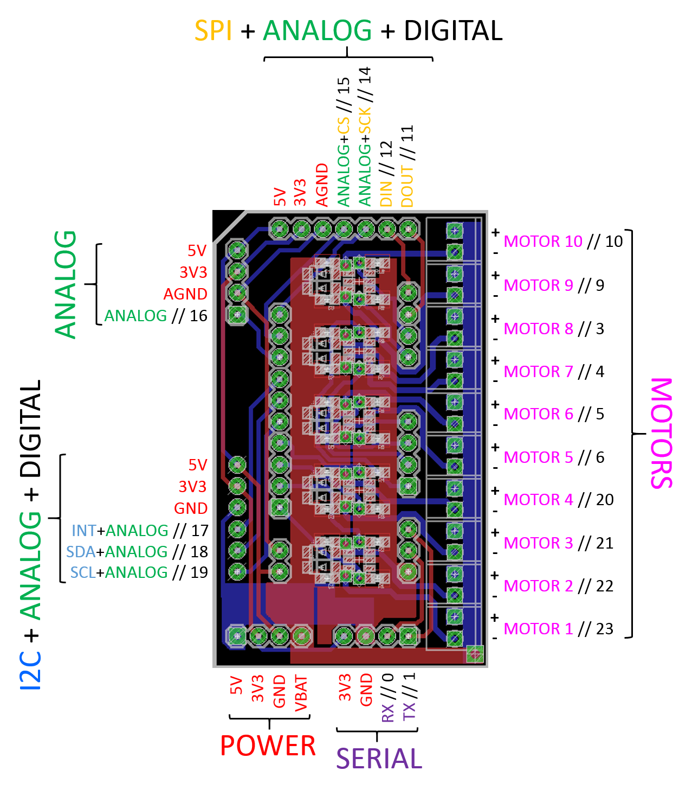
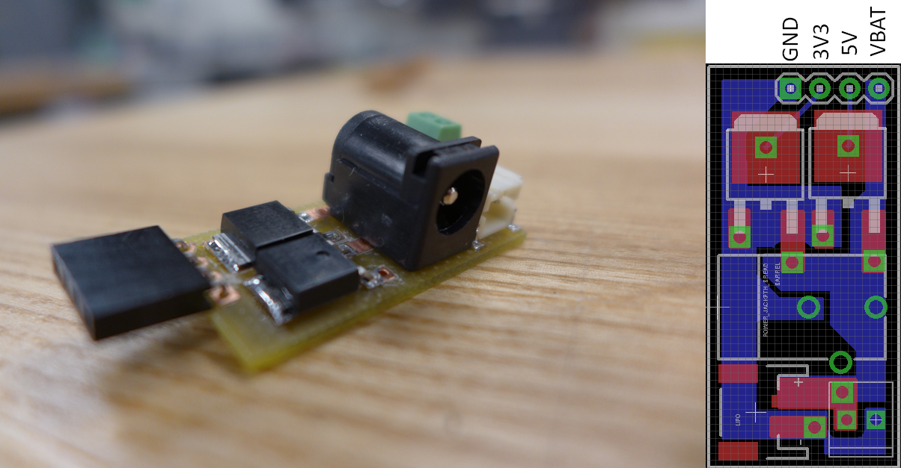
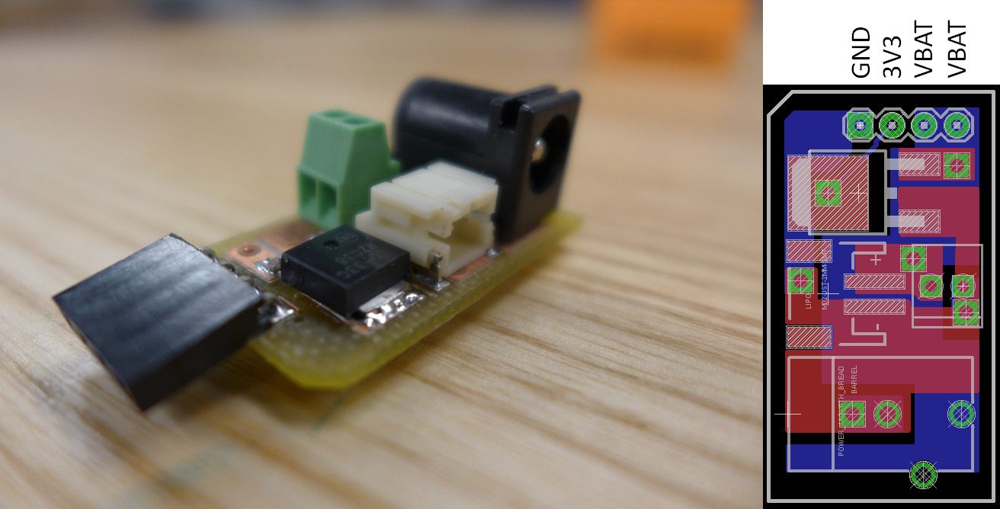
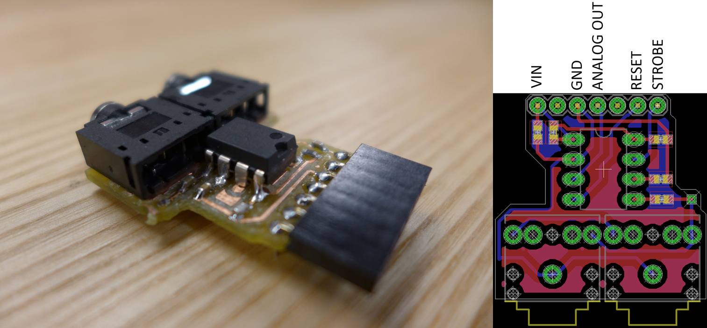
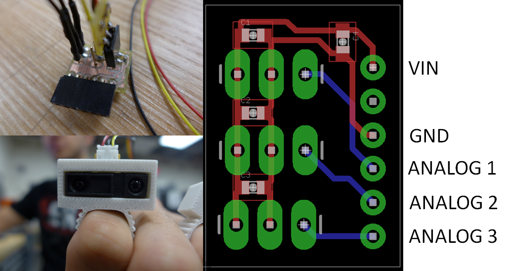

>> Haptix Node is a hardware platform allowing developers to create inexpensive, miniaturized, wearable haptic feedback devices for augmented reality. With minimal effort and technical knowledge, users can map sensor data to customizable haptic gestures across an array of vibration motors worn on the body, allowing them to translate any measurable qualities of light, sound, force, etc. into touch.
>> The platform consists of a 10-motor driver shield for the Teensy 3.1 microcontroller, sensor input ports supporting a variety of data protocols, output ports for vibration motors, and a series of external power modules and sensor modules that easily attach/detach from the device. The device is very small with dimensions of about 3" x 1.75" x 1".
>> The platform abstracts away any concerns regarding power, sensor circuitry, and motor protection circuitry. Nothing needs to be breadboarded. One simply needs to 1) come up with an idea for a closed-loop sensor-actuator system 2) plug the appropriate sensor module into whichever port matches its protocol, 3) plug in the vibration motors, 4) plug in the appropriate external power module, and 5) upload code to the Teensy.
Meta
>> Tencent Innovation Program, Palo Alto, CA, Summer 2014
>> Production Period: 10 weeks
>> My Responsibilities: PCB design, fabrication, assembly, + testing // housing design + assembly // embedded programming + application development
>> Team Members: Tomas Vega (embedded programming + application development)
Project Details

>> Completed product. 3D-printed casing [ top: .ipt.stl ; bottom: .ipt.stl ] Connectors for up to 10 vibration motors. Each channel can handle up to 12 V and 3.5 A.

>> Additional view showing bluetooth/serial port (right) and external power port (left)

>> Additional view showing analog (left) + I2C sensor (right) ports>> Assembly: 7 vibration motors connected via ribbon cable (front), LiPo battery connected via external power module (left), audio spectrum analyzer + audio cable + headphones (right), and IR range sensor module with medium-range analog IR sensor + short-range digital IR sensor (back).

>> Same assembly as above, with cover off. Here you can see the Teensy MCU mounted atop the main PCB. The casing also contains cylindrical magnets, so that the top can easily attach/detach to the bottom. When the two attach, there is a very satisfying "CLACK" sound.

>> Main PCB: fully assembled (left), eagle design [ .sch.brdBOM ] (right). Contains a 10 channel discrete motor driver circuit. Each channel can handle up to 3.5 A and 12 V. Breakout pins and connectors for sensors, actuators, external power, and serial i/o. SMD components soldered by hand.

>> Full pinout for the board. As can be seen, the board supports sensors using a whole span of protocols/formats, including I2C, SPI, serial, and standard analog/digital i/o. The external power port, when paired with the appropriate power module, supplies 5V and 3V3 to the sensors, and the initial source voltage to the motors.

>> Completed "high voltage" power module (left) and eagle design [ .sch.brdBOM ] (right) . Contains barrel jack, JST connector, and screw terminal for an external power supply ranging between 6-12 V. When plugged into the main board, it routes 5V and 3V3 to the sensors, and the source voltage to the motors.

>> Completed "low voltage" power module (left) and eagle design [ .sch.brdBOM ] (right) . Contains barrel jack, JST connector, and screw terminal for an external power supply ranging between 3.7 - 5.5 V. When plugged into the main board, it routes 3V3 to the sensors, and the source voltage to the motors.

>> Completed audio spectrum analyzer module (left) and eagle design [ .sch.brdBOM ] (right). Two stereo audio jacks -- one for input, one for output. Input audio signal passes through the MSGEQ7 chip which returns a 10-bit analog value for the amplitude at 7 discrete frequency bands ranging between 63 Hz and 16 kHz.

>> Completed IR range sensor module (top left), IR sensor and wearable casing (bottom left, designed by Tomas Vega) and eagle design [ .sch.brdBOM ] (right). Breakout pins for up to three range sensors with decoupling capacitors across each one, including the voltage source.